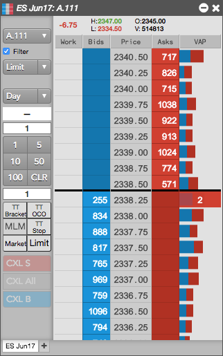

MD Trader is the industry-leading interface that provides single-click order entry for an instrument while displaying market depth against a static, vertical price axis. The static price display gives you a visual sense of market movement over a period of time or relative to other markets.
When entering orders, MD Trader® gives you the ability to quickly and safely enter orders for an instrument with a single click. The static price ladder gives you the confidence to enter an order at a specific price level, and the intuitive design of the widget allows you to manage your working orders and positions.

You can open the MD Trader widget as follows: